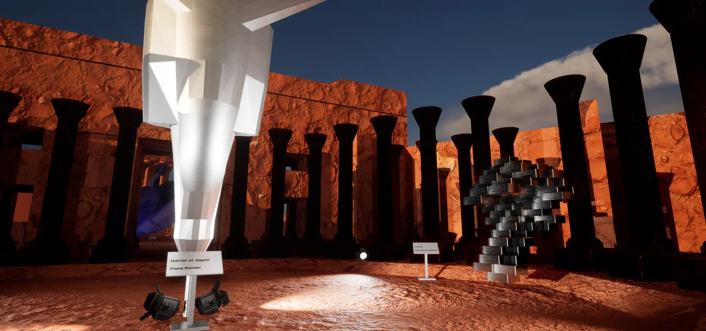
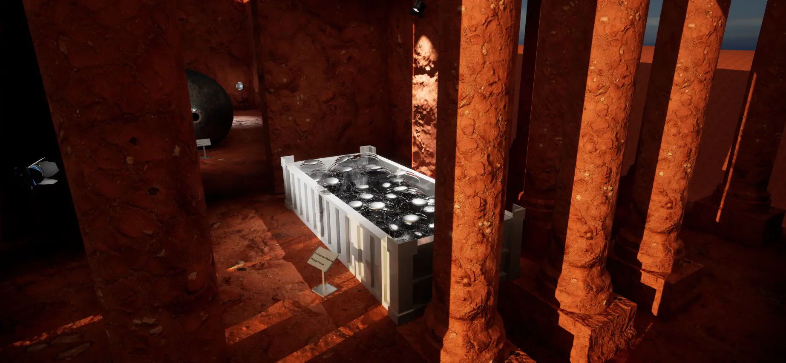
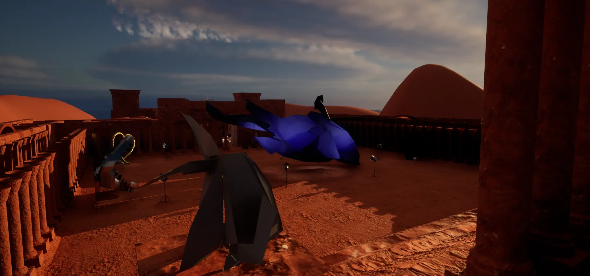

Virtual Temple of Baalbeck
Musée virtuel sur Unreal Engine. Modélisation d'oeuvre d'art moderne sur 3ds max. Les œuvres recréées. sont des artistes : Philipe Pasqua, Fiona Banner, Jean-paul Moscovino et Jean-michel Othoniel
Détail sur le projet :
Le but était de réaliser un musée virtuel dans un bâtiment qui nous était fourni ainsi qu'une liste d'artistes. Ensuite nous étions libre de choisir les oeuvres à modéliser ainsi que leurs placements
Nous avons donc choisi des œuvres des artistes suivants : Philipe Pasqua, Fiona Banner, Jean-paul Moscovino et Jean-michel Othoniel. Ce choix a été fait avec l'idée de marquer une contradiction avec le temple et l'art contemporain des artistes. Nous avons placé le temple au milieu du désert pour donner cette impression d'être hors du temps.
Je me suis personnellement occupé de l'intégration des œuvres dans le moteur de jeu unreal engine 5, et de modéliser "Le chant des méduses" de Phillipe Pasqua et "La colombe de la paix" de Jean-paul Moscovino (voir images ci-dessous).
Images :

Entrer du temple avec "Harrier et Jaguar" et "Iceberg"

Temple interieur avec vue sur "Le chant des méduses"

Aperçu de la cour interieur avec en premier plan "La colombe de la paix"